Man-day Scorecard · v2026.11
คู่มือการใช้งานหน้าจอ
มุมชนะชัย (Admin)
ฉบับละเอียด — จุดประสงค์ · สิ่งที่เห็นบนจอ · ปุ่มสำคัญ · ผลเมื่อกด · สิทธิ์ admin
แคปจอ Light Mode · Dev Login ชนะชัย · รวมงานทีม · คุณภาพ · Admin · Integrations · Drawer 360°
แหล่ง: docs/คู่มือการใช้งานหน้าจอ.md
คู่มือการใช้งานหน้าจอ — Man-day Scorecard (v2026.11 · มุมชนะชัย / Admin)
เอกสารนี้เป็นคู่มือหน้าจอฉบับปัจจุบัน แคปจอโหมดสว่าง (Light Mode · 1600×1050) ด้วยบัญชี Dev Login ชนะชัย (chanachai · สิทธิ์ admin) ไล่ทีละหน้าพร้อมคำอธิบายการทำงาน
อ้างอิง: คู่มือ.md · ระบบ.md · Checklist: checklist-ทดสอบมือ.md
แคปจอ: docs/manual-screenshots/ · สคริปต์: node scripts/capture_all_screens.mjs --person=chanachai
PDF: node scripts/build-manual-pdf.mjs → คู่มือการใช้งานระบบ.pdf
หมายเหตุสิทธิ์: คู่มือนี้โฟกัสมุม Admin (ชนะชัย) — เมนูตั้งค่าระบบโผล่ครบ · หากสลับเป็น persona Member เมนูแอดมินจะหายและเห็นเฉพาะงานของตน
ภาพรวมโครงสร้างและการนำทาง (ที่ชนะชัยเห็น)
- Sidebar เดียวตามสิทธิ์: งานของฉัน · ภาพรวมงาน · ทีมของฉัน · งานทีม · Git & MR · ปฏิทิน · คะแนน & วิเคราะห์ · คนในทีม · ตั้งค่าระบบ (สิทธิ์ & ตั้งค่า · พนักงาน & ทีม · โปรเจกต์ · เกณฑ์คะแนน · ตรวจก่อนล็อก · เชื่อมต่อระบบ · Teams)
- หลังล็อกอิน: ทุกสิทธิ์ไป
/me ก่อนเสมอ
- คีย์ลัด:
Ctrl+B ยุบ Sidebar · Ctrl+K Omnisearch (ใบงาน / คน / โปรเจกต์ / เมนู)
- Global Filter: โผล่บนหน้าศูนย์กลาง (
/work, /team, /cockpit, /people, /quality, /mygit, /schedule) — ซ่อนบน /me และหน้า Admin
- รายละเอียดใบงานกลาง: ทุกจุด「ดูใบงาน」เปิด drawer ขวาชุดเดียว (
TicketDetailService) — ยกเว้น Board คลิกการ์ดยังเป็น dialog แก้ไขแผน
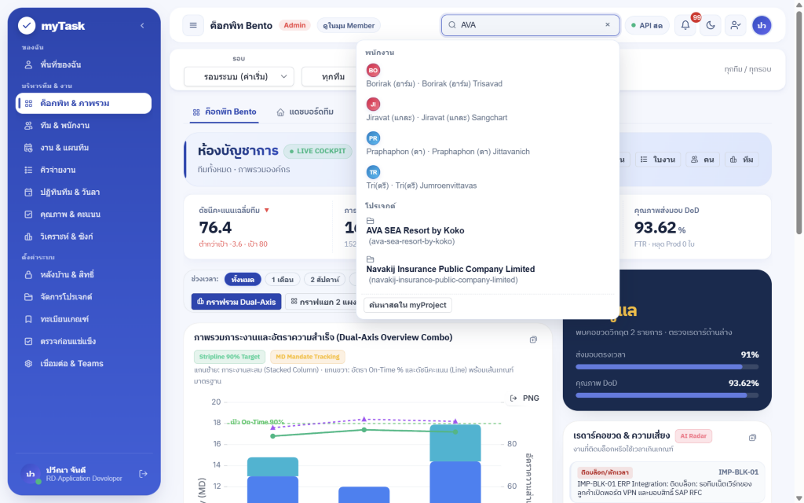
Omnisearch
สารบัญ
| ส่วน | หน้าจอ | Route | รูป |
|---|
| 1 | เข้าสู่ระบบ | /login | 01 |
| 2 | งานของฉัน | /me | 02 |
| 3–4 | ภาพรวมงาน | /cockpit | 03–04 |
| 5 | แดชบอร์ดทีม | /team | 05 |
| 6–8 | คน / พนักงาน / ทีม | /workspace/people · /people · /org/teams | 06–08 |
| 9–13c | งานทีม (สรุป→เวลา) | /work/* | 09–13c |
| 12b | Drawer ใบงาน 360° | จาก list/อื่น | 12b |
| 14 | ปฏิทิน | /schedule | 14 |
| 15–21 | คุณภาพ · คะแนน · Git · AI | /quality/* · /mygit | 15–21 |
| 22–27 | Admin · Integrations · Projects | /admin* · /integrations · /teams | 22–27 |
| 25b | Sync-audit myProject | /integrations | 25b |
| 28 | รายละเอียดโปรเจกต์ | /org/projects/:id | 28* |
| 29 | โหมดจำลอง | /quality/mockup | 29 |
ส่วนที่ 1: เข้าสู่ระบบ
1. เข้าสู่ระบบ (/login)
- จุดประสงค์
- เลือกบัญชี Dev หรือ SSO เพื่อเข้าแอป
- สิ่งที่เห็น
- การ์ด/ชิปพนักงาน (ค้นหาได้) · แท็บ GitLab OAuth
- ปุ่มสำคัญ
- ชิป ชนะชัย (Dev Quick Login) · ปุ่ม SSO
- ผลเมื่อกด
- เข้าสู่ระบบ → ไป
/me ทันที
- สิทธิ์ admin
- หลังเข้าจะเห็นเมนูตั้งค่าระบบครบบน Sidebar
 เข้าสู่ระบบ
เข้าสู่ระบบ
ส่วนที่ 2: งานของฉัน (Landing)
2. งานของฉัน (/me)
- จุดประสงค์
- หน้าแรกหลังล็อกอิน — ดูผลงานและงานเปิดของตัวเองก่อน
- สิ่งที่เห็น
- โปรไฟล์ · ดัชนีพัฒนาการเทียบเป้าตัวเอง · งานเปิด/ปิด · เป้า MD สัปดาห์ · คำแนะนำสั้น
- ปุ่ม/ลิงก์
- คลิกใบงาน → เปิด drawer 360° · ลิงก์ไปงานทีม/คุณภาพจากเมนู
- ผลเมื่อกด
- ไม่จัดอันดับเทียบคนอื่น — โฟกัสงานของชนะชัย
- สิทธิ์ admin
- ใช้หน้านี้เหมือน member แต่สลับไปเมนูทีม/แอดมินได้ทันทีจาก Sidebar
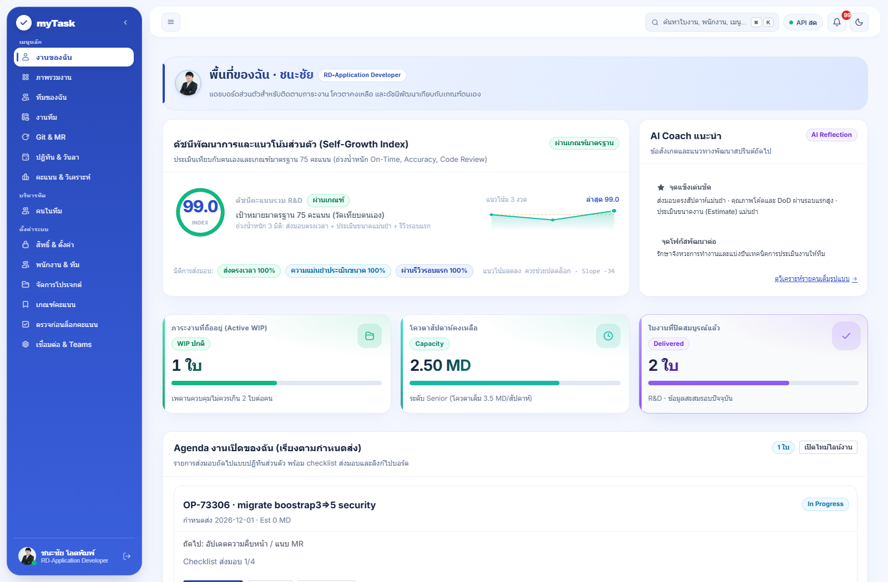
งานของฉัน
3–4. ภาพรวมงาน (/cockpit)
- จุดประสงค์
- แดชบอร์ดภาพรวมทีม/องค์กร (Bento) สำหรับ Lead/Admin
- สิ่งที่เห็น
- KPI ภาระงาน · แนวโน้มคะแนน · คุณภาพส่งมอบ · Stage Aging · Risk Radar · โหมดทีวี
- ปุ่มสำคัญ
- TV Mode · Maximize กราฟ · คลิกโดนัท/ใบงานเพื่อเจาะหน้าปลายทางพร้อมฟิลเตอร์
- ผลเมื่อกด
- Global Filter (ทีม/คน/สาย) มีผลกับตัวเลขบนหน้า
- สิทธิ์ admin
- เห็นทั้งองค์กรตาม
allowedTeams / staging
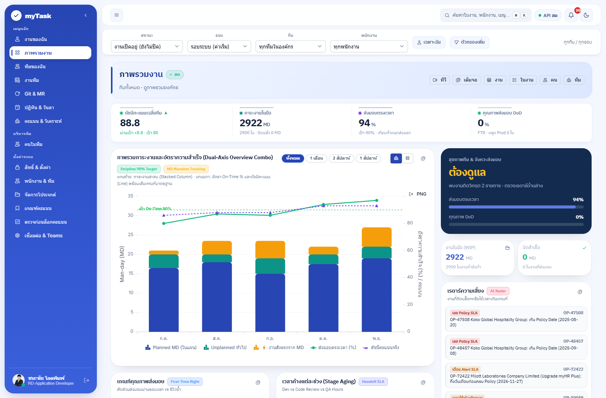
ภาพรวมงาน
ส่วนที่ 3: ทีม & คน
5. แดชบอร์ดทีม (/team)
- จุดประสงค์
- วิเคราะห์ดัชนีทีม โควตา Planned vs Unplanned vs MD
- สิ่งที่เห็น
- กราฟดัชนี · Donut ชนิดงาน · KPI Snapshot ย้อนหลัง · บล็อกทีมที่ดูแล
- ปุ่มสำคัญ
- คลิกสมาชิก → Person Workspace
- สิทธิ์ admin
- เห็นทีมตามขอบเขตสิทธิ์ข้ามแผนก
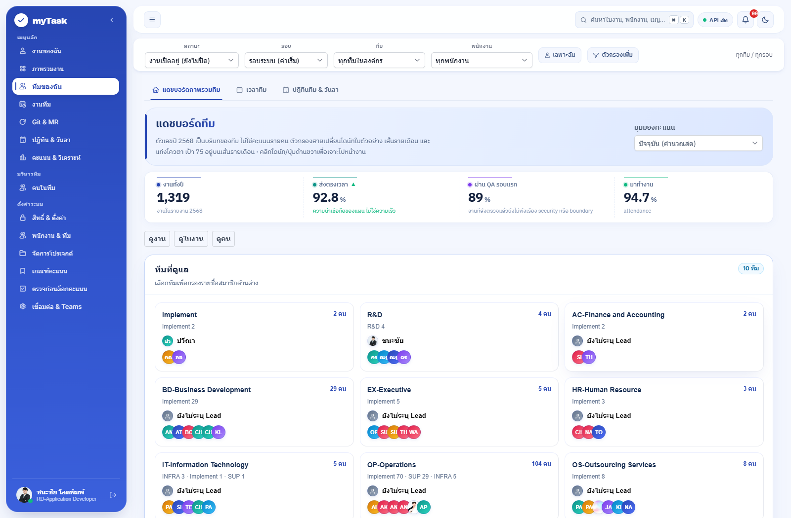
แดชบอร์ดทีม
6. พนักงาน & ทีม — Directory (/workspace/people)
- จุดประสงค์
- ตะแกรงนามบัตรคน → เข้า Workspace รายบุคคล
- สิ่งที่เห็น
- การ์ดคน (รูป · สาย · WIP · ดัชนี) · แท็บ พนักงาน \ · ทีม (admin)
- ปุ่มสำคัญ
- คลิกการ์ด →
/workspace/people/:personId · แท็บทีม = การ์ดทีม
- ผลเมื่อกด
- ไม่กรองรายชื่อด้วย route personId — directory แสดงทั้งชุดตามสิทธิ์
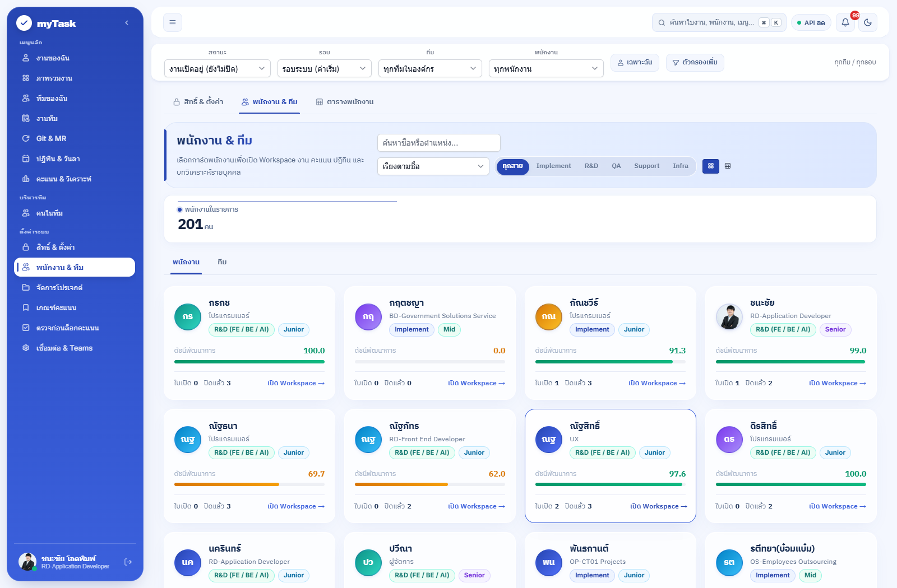
คนในทีม
7. ตารางดัชนีพนักงาน (/people)
- จุดประสงค์
- เปรียบเทียบดัชนี/โควตาแบบตาราง + กราฟ
- สิ่งที่เห็น
- DataGrid (ตรึงชื่อ+อวาตาร์) · progress ในเซลล์ · Export
- ปุ่มสำคัญ
- คลิกชื่อ → โปรไฟล์/Workspace
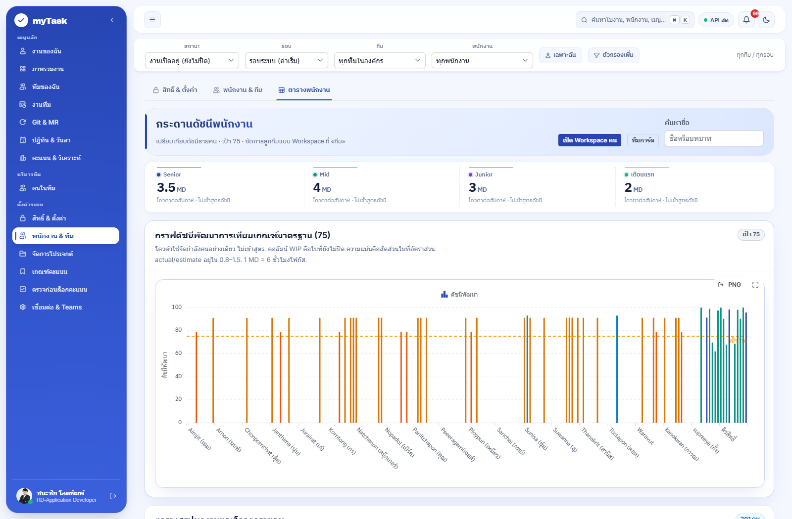
ตารางพนักงาน
8. แท็บทีม (/org/teams → /workspace/people?view=teams)
- จุดประสงค์
- เลือกทีมจากชุดเดียวกับพนักงาน & ทีม (ไม่ซ้ำการ์ดบน rail)
- ผลเมื่อกด
- ตั้ง
teamId ใน Global Filter แล้วกลับมุมพนักงาน
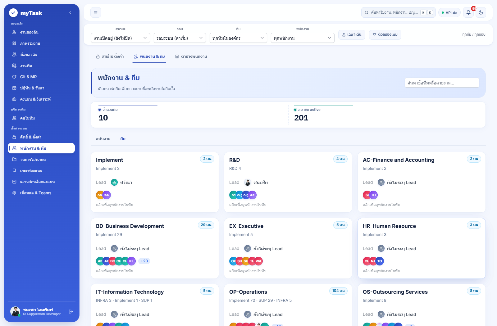
แท็บทีม
Person Workspace ของชนะชัย (/workspace/people/chanachai)
- จุดประสงค์
- ห้องทำงานรายคน — ภาพรวม · งาน · คะแนน · Git & โค้ด
- ปุ่มสำคัญ
- Employee switcher สลับคน · กลับ directory · เปิดใบงานใน drawer
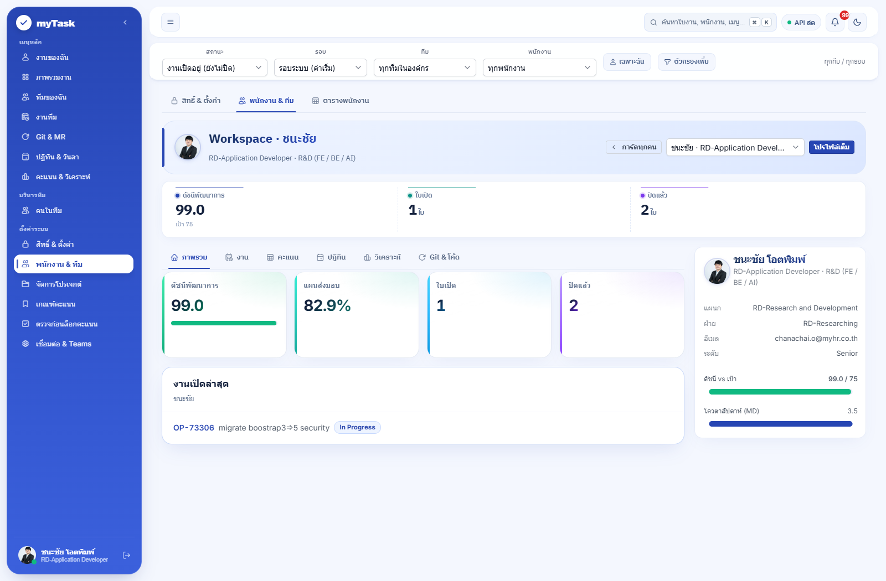
Person Workspace ชนะชัย
ส่วนที่ 4: งานทีม (/work)
ตัวกรองหน้านี้เป็นของ Local (สัปดาห์/ถังวัน/ค้นหา) — ไม่ persist ทีม/สาย (ทีม/สายอยู่ Global Filter)
9. สรุปงานค้าง (/work/summary)
- จุดประสงค์
- จัดงานค้างตามถังวันส่ง (เกินกำหนด / วันนี้ / …)
- สิ่งที่เห็น
- การ์ดถัง · ป้าย MD-DIRECT · ชิปสัปดาห์
- ผลเมื่อกดใบ
- เปิด drawer 360°
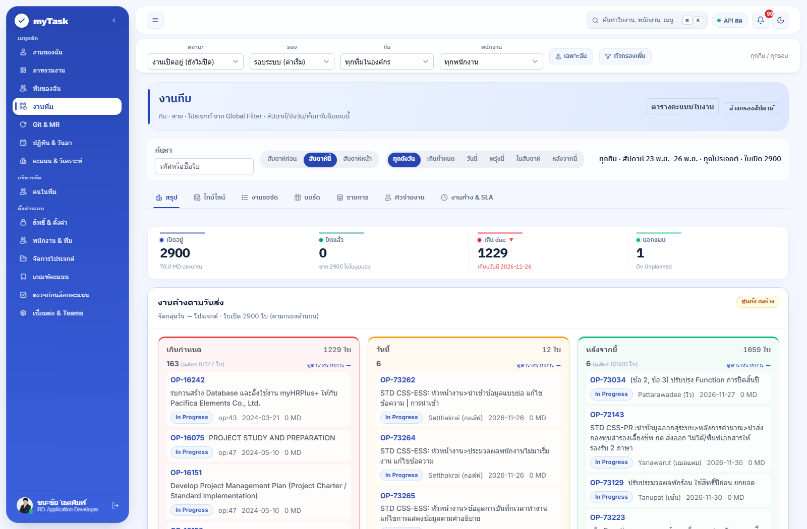
สรุปงาน
9b. งานรอจัด (/work/backlog)
- จุดประสงค์
- ใบที่ยังไม่เข้า pipeline / รอจัดคิว
- ปุ่มสำคัญ
- เปิดรายละเอียด · ส่งต่อไปคิว
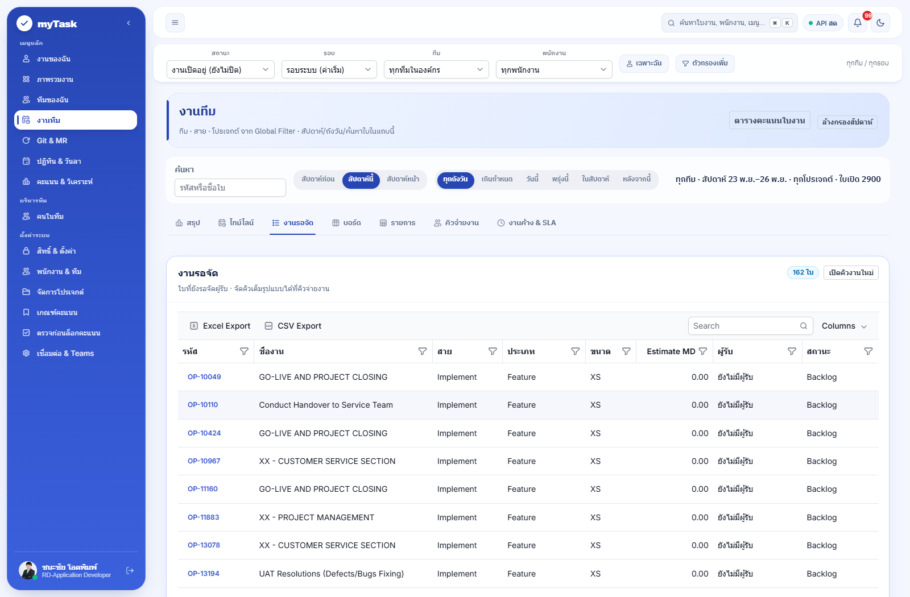
งานรอจัด
10. บอร์ด Kanban (/work/board)
- จุดประสงค์
- ย้ายสถานะงานแบบลากวาง
- สิ่งที่เห็น
- คอลัมน์ workflow · ป้าย MD-DIRECT / MR / Reopen
- ปุ่มสำคัญ
- คลิกการ์ด = dialog แก้แผน (admin/lead) · ดูรายละเอียด 360° = drawer กลาง
- สิทธิ์
- Admin/Lead ย้ายถึง Done ได้ · Member ห้ามปิด Done เอง
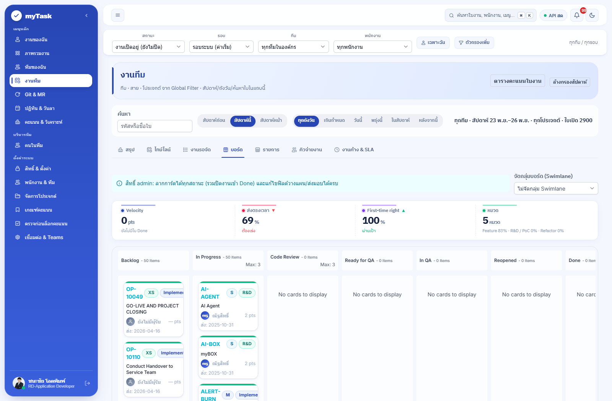
บอร์ด
11. ไทม์ไลน์ Gantt (/work/timeline)
- จุดประสงค์
- แผนวันเริ่ม–ส่ง · มุมโครงงาน / ตามคน
- ปุ่มสำคัญ
- สลับ ProjectView / ResourceView · ลากวัน (admin/lead) — ไม่ทับ
firstDueOn
- ผลเมื่อกดแถว/แท่ง
- เปิด drawer
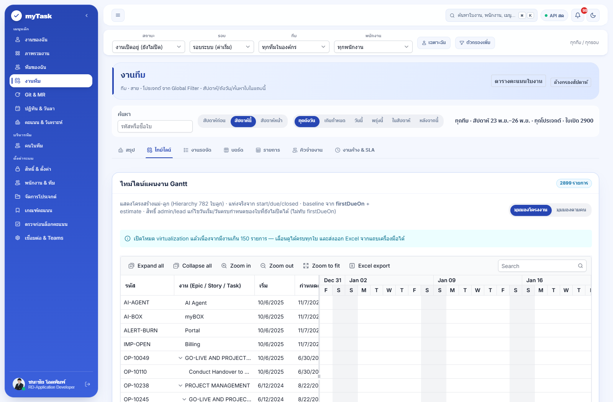
ไทม์ไลน์
12. รายการใบงาน (/work/list)
- จุดประสงค์
- ตารางปฏิบัติการ + คอลัมน์ Policy/SLA
- ปุ่มสำคัญ
- คลิกรหัสใบ → drawer · Export Excel/CSV · Column chooser
- สิทธิ์ admin
- เห็นทุกทีมตามฟิลเตอร์
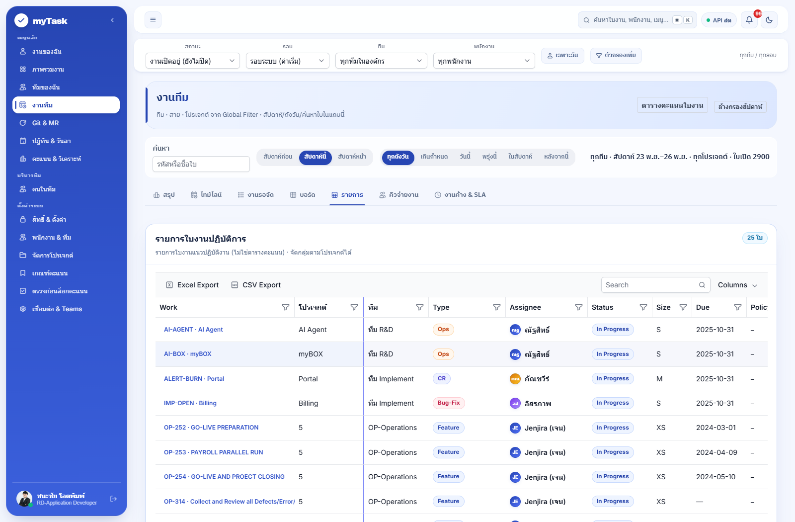
รายการ
12b. Drawer รายละเอียดใบงาน 360° (มาตรฐานเดียวกัน)
- จุดประสงค์
- ดูใบงานจากทุกจุดด้วย UI ชุดเดียว แนว myProject
- สิ่งที่เห็นบนหัว
- Type (เช่น Ops) · ชื่อเรื่อง · status workflow (+ opStatus) · ผู้สร้าง/วันอัปเดต · แถบโปรเจกต์ · ลิงก์ myProject
- แท็บ
- ภาพรวม · ความเคลื่อนไหว · ไฟล์ · ความสัมพันธ์ · คนเกี่ยวข้อง · เวลา · โค้ด & MR
- ภาพรวม
- คำอธิบาย · สาย/ขนาด/Estimate/Actual/Due · คะแนนย่อ · กล่อง Policy & SLA (+ ป้าย Auto)
- ผลเมื่อกดความสัมพันธ์
- เปิดใบที่เกี่ยวข้องใน drawer ชุดเดิม
- Writeback
- ลงเวลา/คอมเมนต์ใช้ได้เมื่อ
OPENPROJECT_WRITEBACK=true
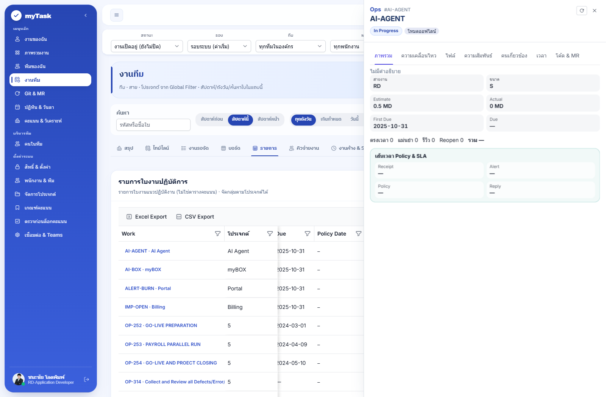
Drawer ใบงาน
13. คิวจ่ายงาน (/work/queue)
- จุดประสงค์
- จ่ายงานให้คนตามโควตา
- ปุ่มสำคัญ
- รับข้อเสนอคิว · ยืนยัน writeback assignee เมื่อมี
opId
- สิทธิ์
- เฉพาะ admin \ · lead
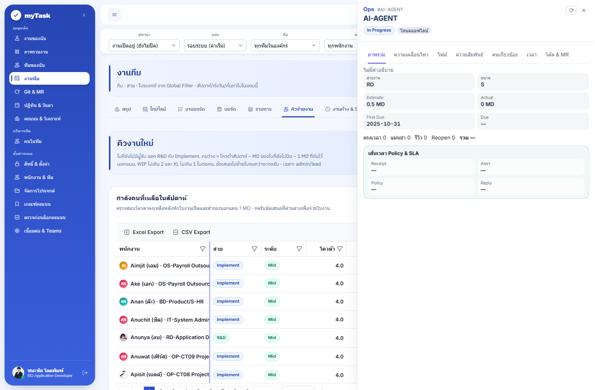
คิว
13b. งานค้าง & SLA (/work/handoff)
- จุดประสงค์
- Stage aging · blocker · ping Teams
- ปุ่มสำคัญ
- เปิดใบใน drawer · Ping SLA
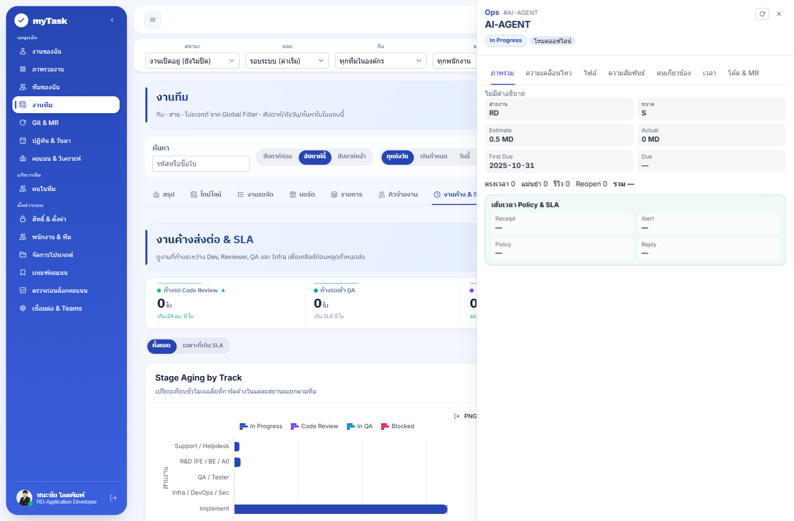
Handoff
13c. เวลาทีมรายวัน (/work/team-time)
- จุดประสงค์
- Timesheet matrix จ–ศ ของทีม
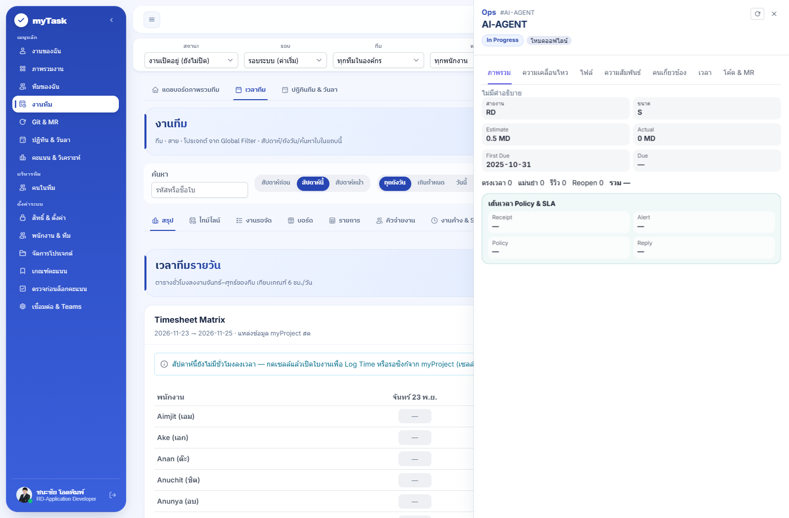
เวลาทีม
14. ปฏิทิน & วันลา (/schedule)
- จุดประสงค์
- ปฏิทินกำหนดส่งรายคน
- หมายเหตุ
- แผงรายวันในหน้า ≠ drawer Over — คลิกใบยังเปิด drawer กลางได้
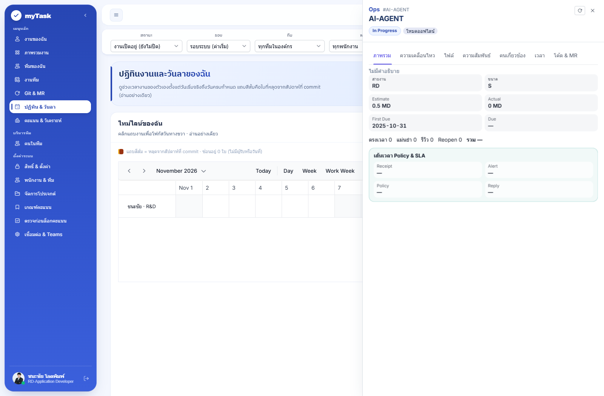
ปฏิทิน
ส่วนที่ 5: คะแนน & คุณภาพ
15. ตรวจคุณภาพ QA (/quality/audit)
- จุดประสงค์
- DoD Gate · Pareto reopen · ส่งกลับ Dev
- ปุ่มสำคัญ
- เปิดใบ 360° · Reject to Dev
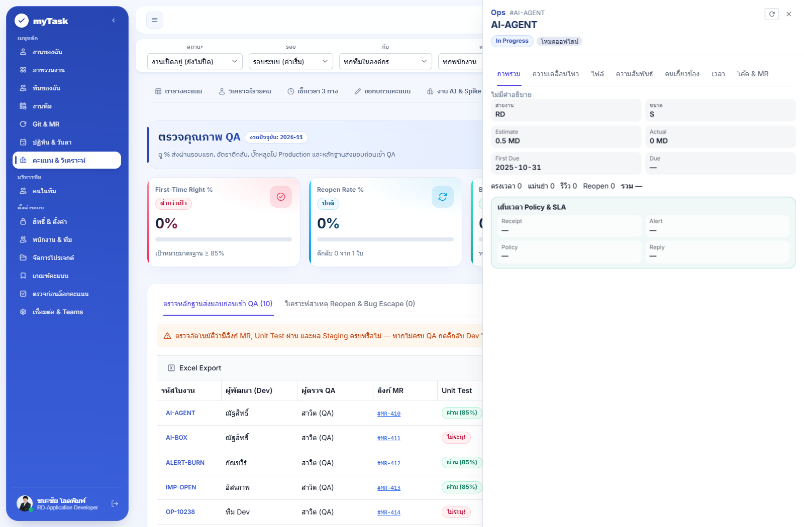
QA Audit
16. ตารางคะแนน (/quality/tickets)
- จุดประสงค์
- คะแนนเต็ม 100 รายใบ (ตรงเวลา 40 · แม่นยำ 20 · รีวิว 20 · Reopen/DoD 20)
- ปุ่มสำคัญ
- คลิกรหัส → drawer · นำเข้า · Export · ซิงก์
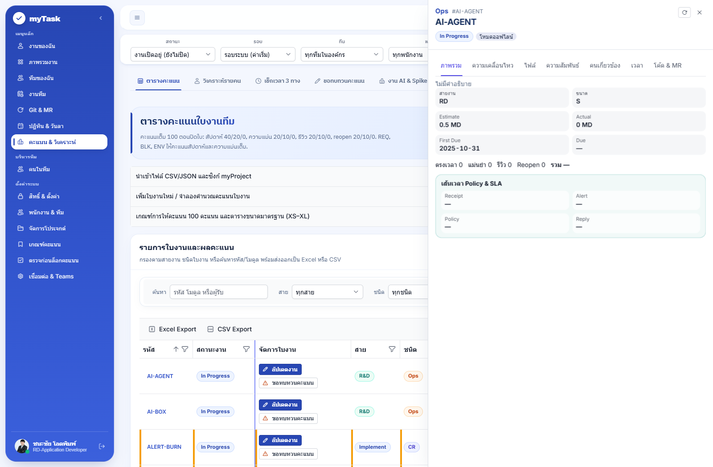
ตารางคะแนน
16b. OLS / สรุป AI (/quality/ols)
วิเคราะห์แนวโน้มดัชนีและ coaching สรุปทีม
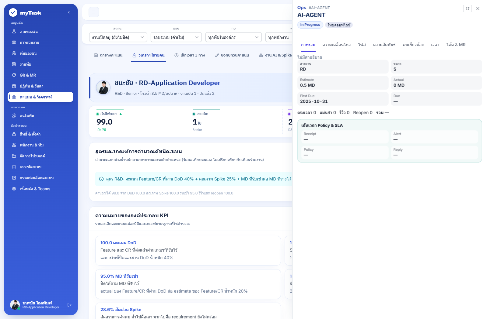
OLS
17. เช็กเวลา 3 ทาง (/quality/time-audit)
Estimate vs Actual (OP) vs Git Commit Span — จับ outlier การประเมินขนาด
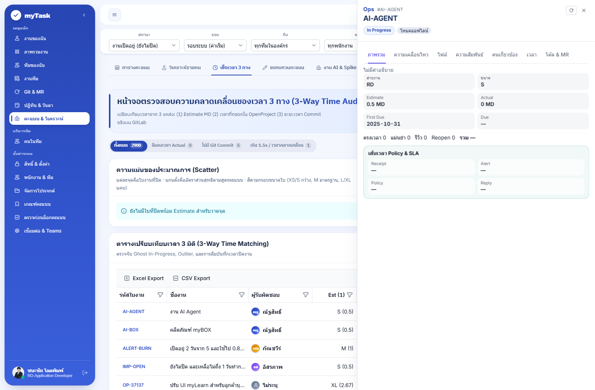
Time audit
18. ขอทบทวนคะแนน (/quality/disputes)
Split-pane: รายการคำขอซ้าย · คำนวณ projected score ขวา · อนุมัติ/ปฏิเสธ (lead/admin)
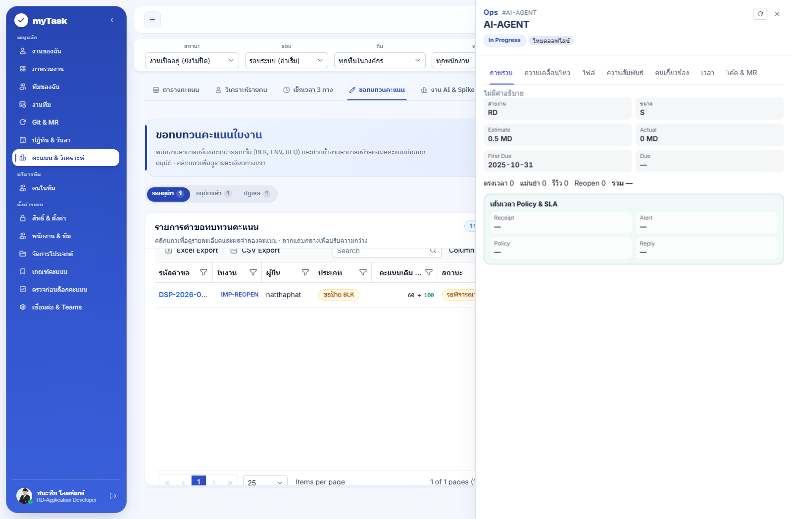
Disputes
19. วิเคราะห์ทีม (/quality/report)
Python Analytics Hub — hygiene · outlier · coaching
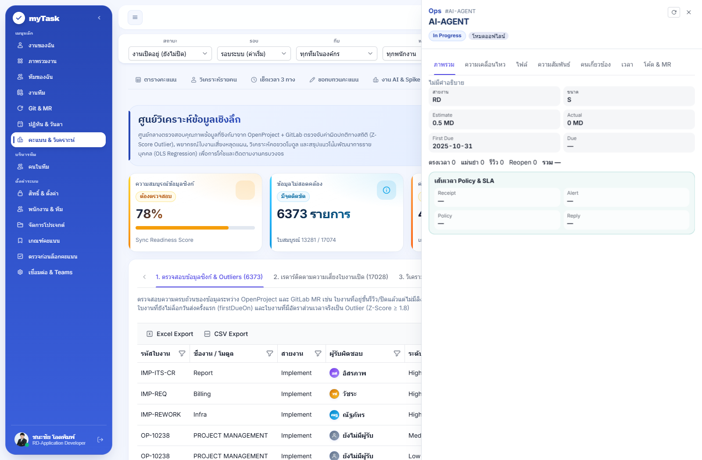
Report
20. Git & MR (/mygit)
- จุดประสงค์
- ซิงก์ MR จาก GitLab · จับคู่ใบงาน · CI / รีวิว
- หมายเหตุ
- ฟีเจอร์ Git อยู่ที่ Scorecard + GitLab — ไม่พึ่ง OpenProject
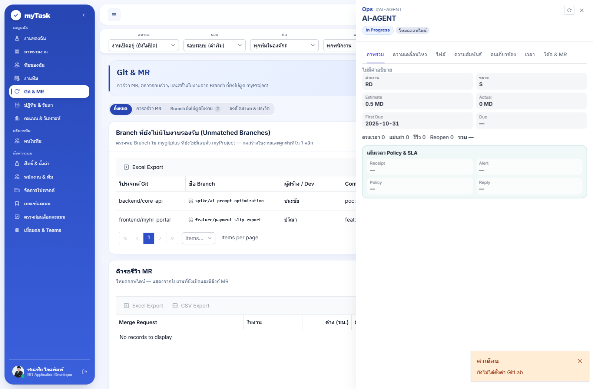
Git MR
21. งาน AI & Spike (/quality/ai)
ติดตามสัดส่วน MD งานวิจัย/Spike/AI
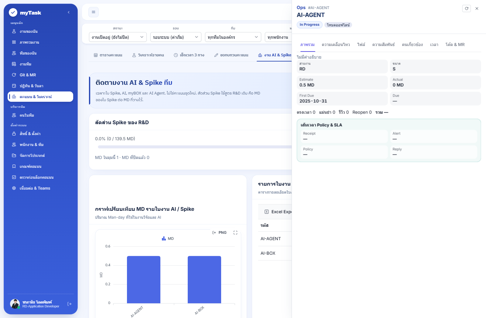
AI
ส่วนที่ 6: ตั้งค่าระบบ (Admin — ชนะชัย)
Global Filter ซ่อนในกลุ่มนี้
22. สิทธิ์ & ตั้งค่า (/admin)
- จุดประสงค์
- รอบประเมิน · โควตา · น้ำหนักคะแนน · Role Matrix · Audit Log
- ปุ่มสำคัญ
- เปิดรอบปี · ตั้งเป็นรอบระบบ · ปรับ access รายคน
- ผลเมื่อกด
- รอบระบบไปโผล่บน Global Filter ทั้งแอป
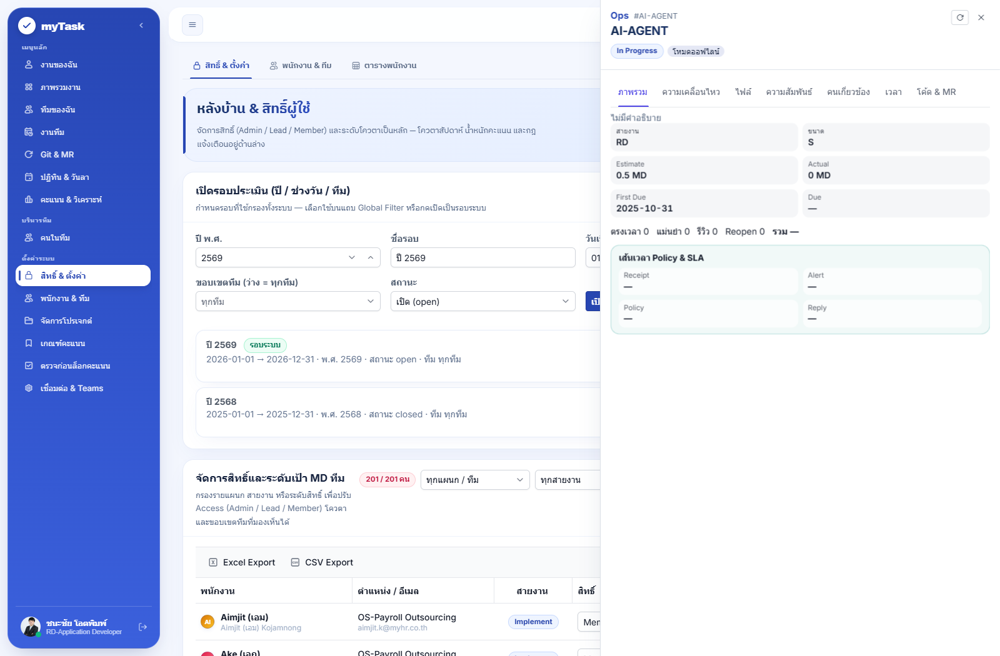
Admin
23. เกณฑ์คะแนน (/admin/rubrics)
ทะเบียนสูตร 6 สาย (IMP/RND/QA/UXBA/SUP/INFRA) แก้ inline
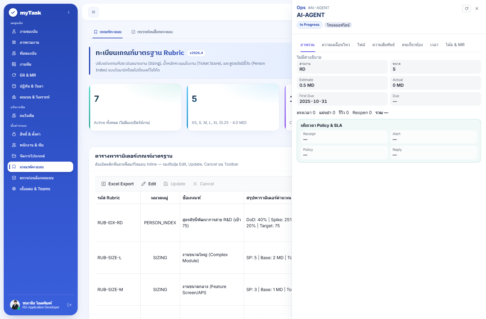
Rubrics
24. ตรวจก่อนล็อกคะแนน (/admin/snapshot-check)
Readiness % + 4 Gates · Preview Diff ก่อนจับ KPI Snapshot
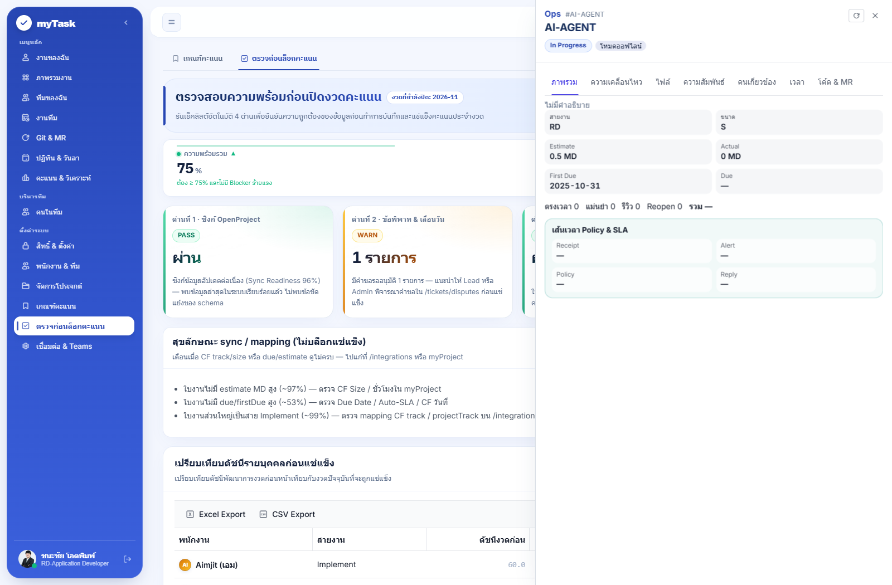
Snapshot check
25. เชื่อมต่อระบบภายนอก (/integrations)
- จุดประสงค์
- ตั้ง OpenProject · GitLab · Teams
- OpenProject
- URL/Token · โปรเจกต์ซิงก์ · statusMap/typeMap · CF & Auto-SLA · กลุ่ม roster (
people.active) · ปุ่มซิงก์ใบงาน / ซิงค์พนักงาน
- ปุ่มสำคัญ
- ดึงโปรเจกต์/สถานะ · สแกน CF · Sync OpenProject · ซิงค์พนักงาน · บันทึก
- ผลเมื่อกดซิงค์พนักงาน
- ถ้าตั้ง roster groups → เปิด active เฉพาะสมาชิกกลุ่ม (ไม่ลบแถวคนอื่น)
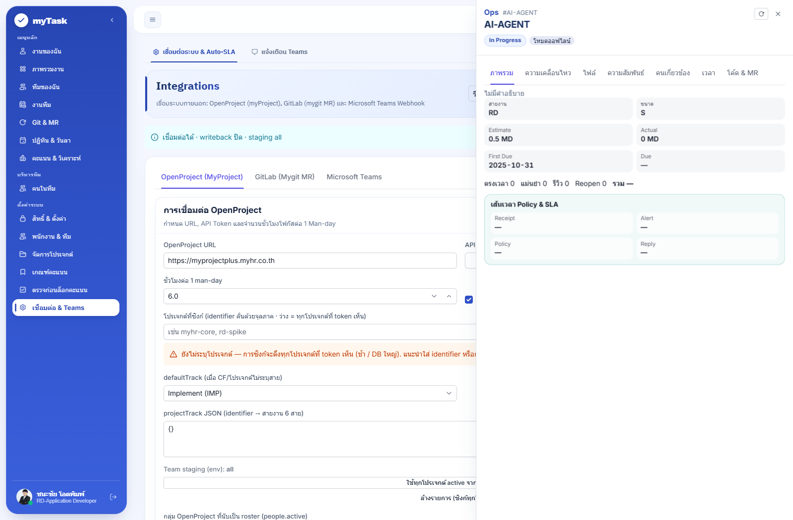
Integrations
25b. รายงานเทียบซิงก์ (sync-audit)
- จุดประสงค์
- อ่านอย่างเดียว — เทียบ Users/Groups/Types/Status/CF/Enumerations กับ API จริงก่อนเปลี่ยน DB
- ปุ่มสำคัญ
- ตรวจซิงก์สด
- สิ่งที่เห็น
- คน active ไม่อยู่ใน roster · type/status ที่ยังไม่แมป · CF สำคัญ 43/44/45/46/163/185/219 · enumerations
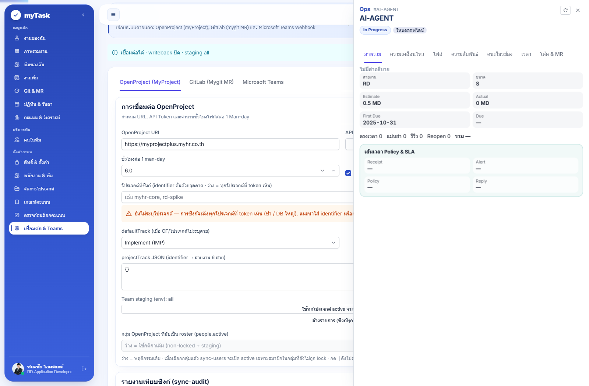
Sync audit
26. แจ้งเตือน Microsoft Teams (/teams)
Webhook สรุปงานค้าง/SLA · ทดสอบส่ง · ประวัติ
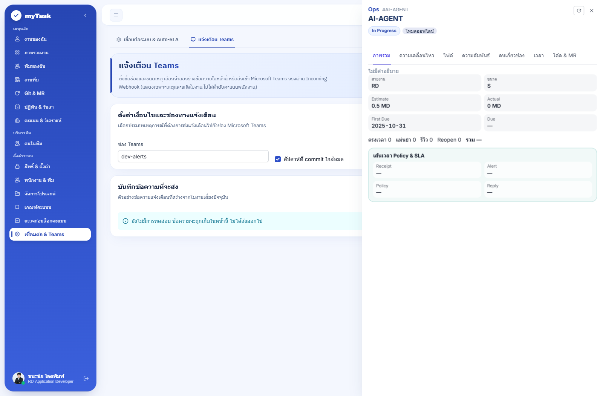
Teams
27. จัดการโปรเจกต์ (/admin/projects)
Smart Merge จาก myProject · Active toggle · Assigned teams · ลิงก์ไปรายละเอียดโปรเจกต์
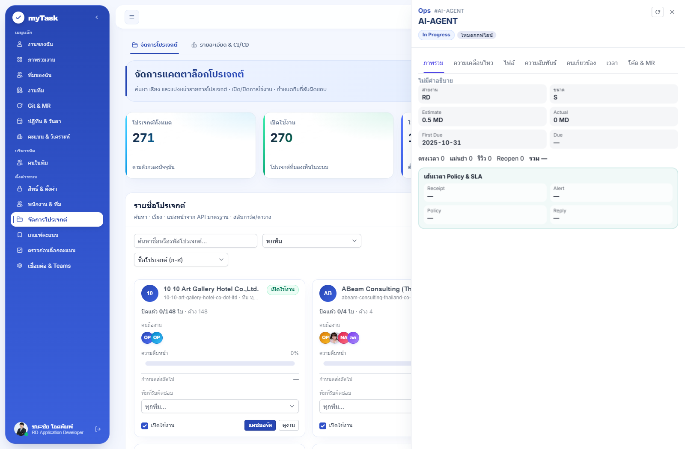
Projects catalog
ส่วนที่ 7: รายละเอียดโปรเจกต์ & โหมดจำลอง
28. ศูนย์โปรเจกต์ (/org/projects/:id) — 4 แท็บ
- ภาพรวม & สุขภาพ — KPI MD · Stage · Track · Risk watchlist
- ใบงาน — กริด · เปิด drawer
- Git & กิ่งโค้ด — ผูก repo · CI · สร้างใบจาก unmatched branch
- ทีม & คน
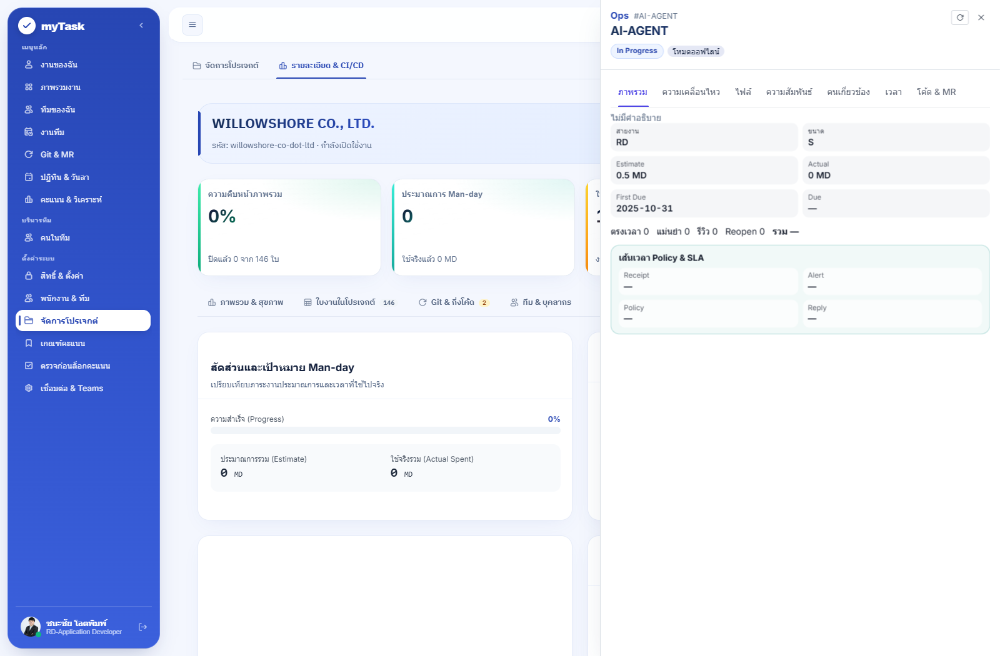
สุขภาพโปรเจกต์
ใบงานในโปรเจกต์
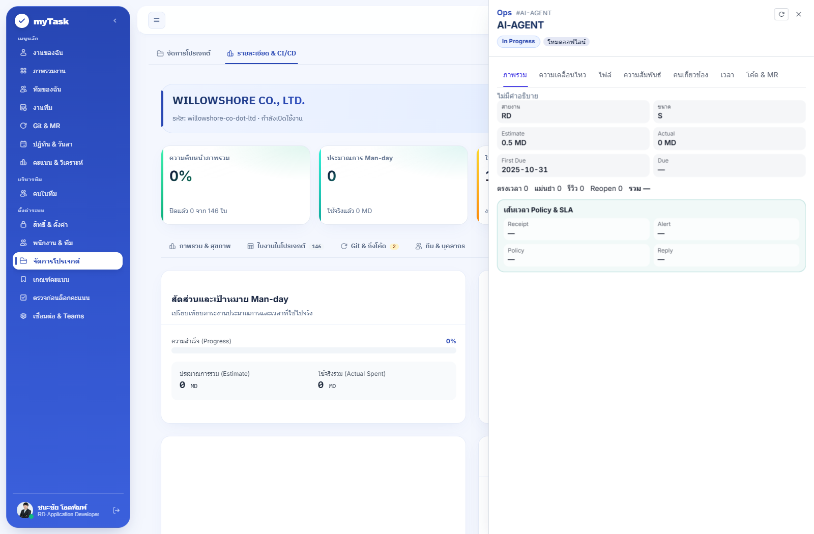
Git ในโปรเจกต์
29. โหมดจำลอง (/quality/mockup)
จำลองใบงาน→คะแนนโดยไม่กระทบข้อมูลจริง — ใช้ทดสอบสูตร/โฟลว์
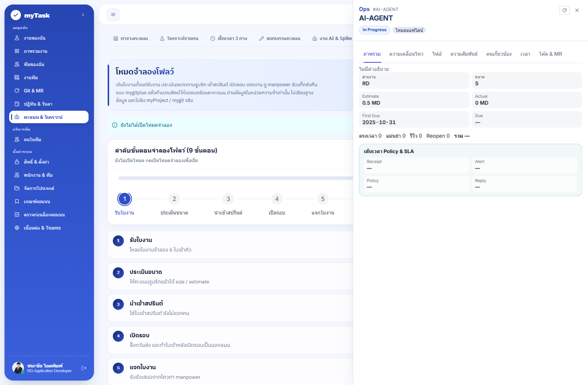
Mockup
ส่วนเสริม: Policy/SLA · แจ้งเตือน · Type ไดนามิก
รายละเอียดลึกเรื่อง Auto-SLA, ป้าย Auto ใน drawer, กระดิ่ง AppBar, และ catalog type/status จาก myProject ยังใช้อ้างอิงจากแคปเดิม:
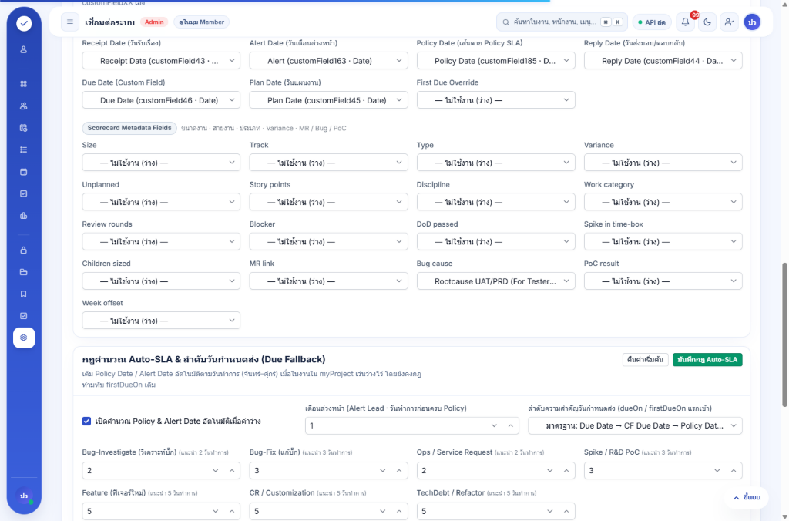
Integrations Policy SLA
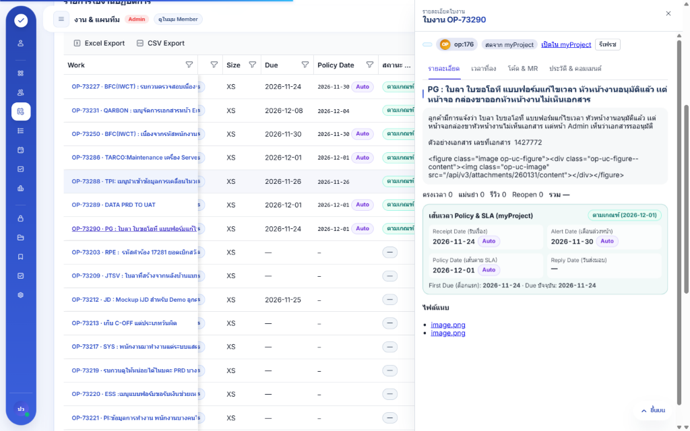
Drawer Policy SLA
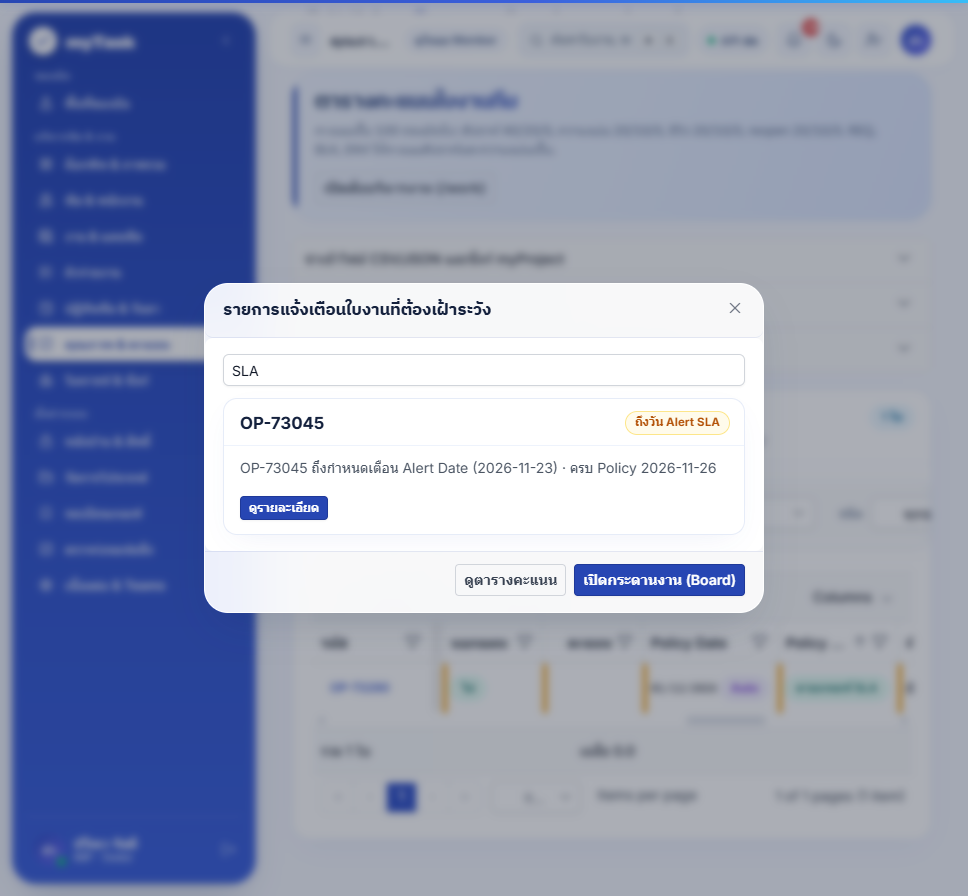
AppBar alerts
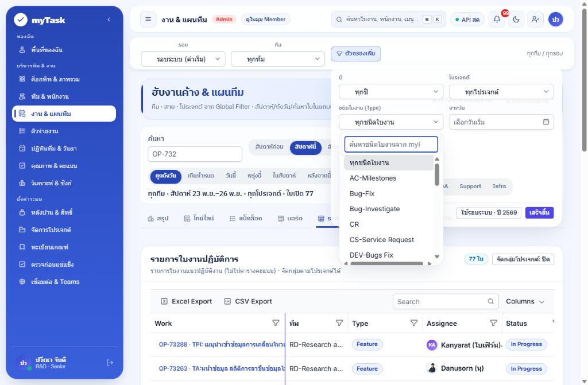
Dynamic types & avatars
สรุปโฟลว์ที่ชนะชัยใช้บ่อย
โฟลว์สรุป
flowchart LR
login["/login ชนะชัย"] --> me["/me"]
me --> work["/work"]
work --> drawer["Drawer 360"]
me --> cockpit["/cockpit"]
me --> admin["/admin"]
admin --> integ["/integrations"]
integ --> syncUsers["sync-users"]
integ --> audit["sync-audit"]
work --> git["/mygit"]
- ล็อกอินชนะชัย → ดู
/me
- ไป
/work จัดงาน / เปิด drawer
/quality/tickets ตรวจคะแนน /integrations ซิงก์ myProject + ตรวจ sync-audit + ตั้ง roster /admin เปิดรอบประเมิน / ตรวจ snapshot ก่อนล็อกคะแนน